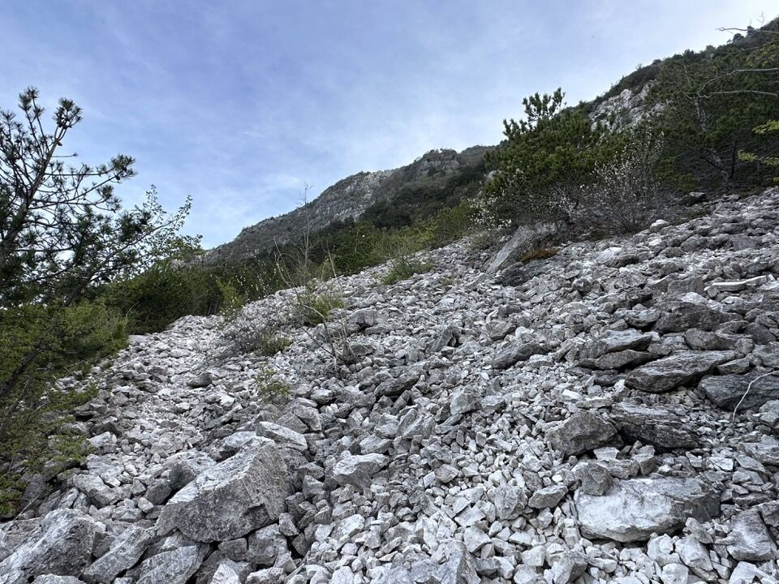
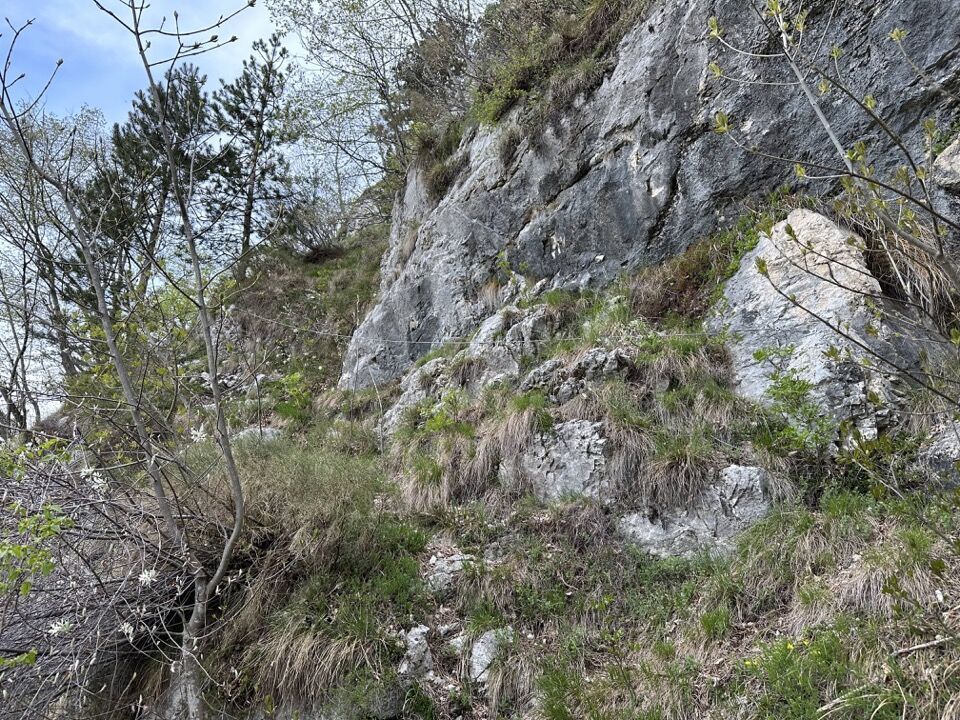
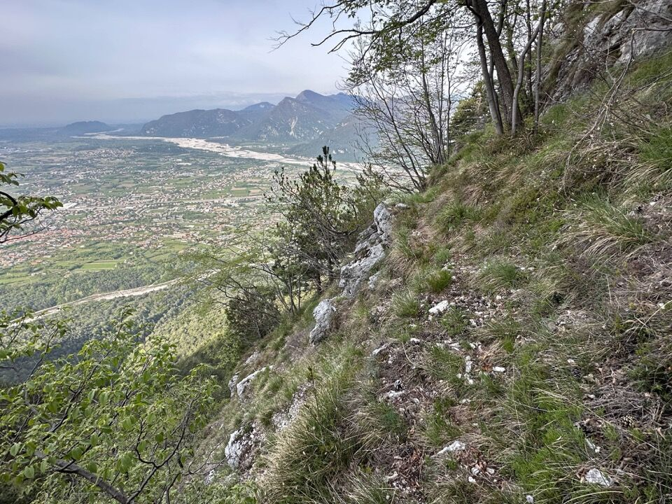
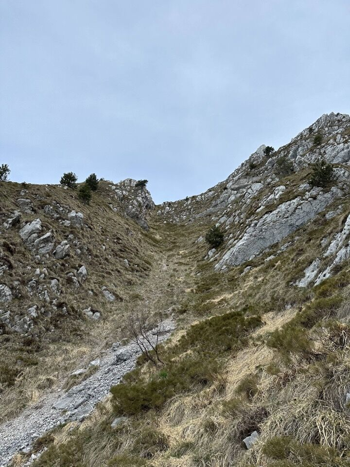
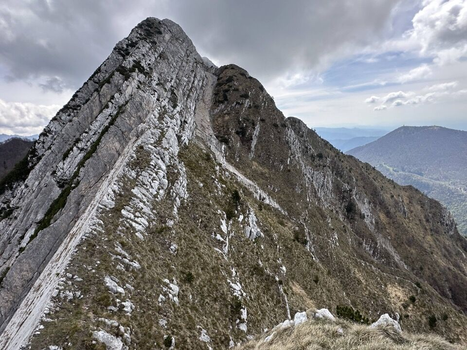
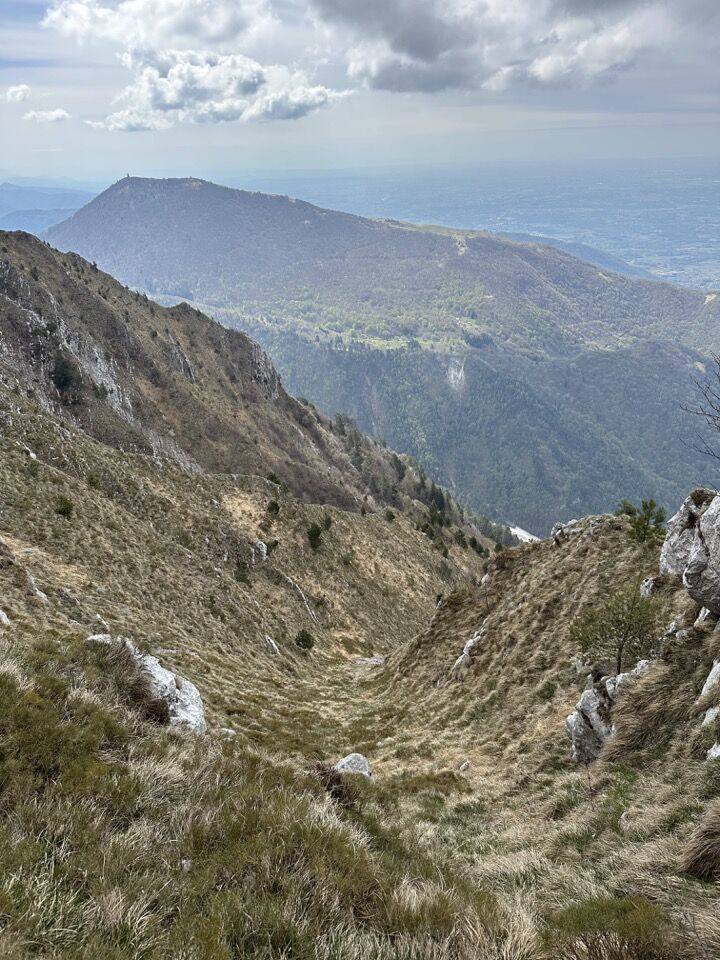
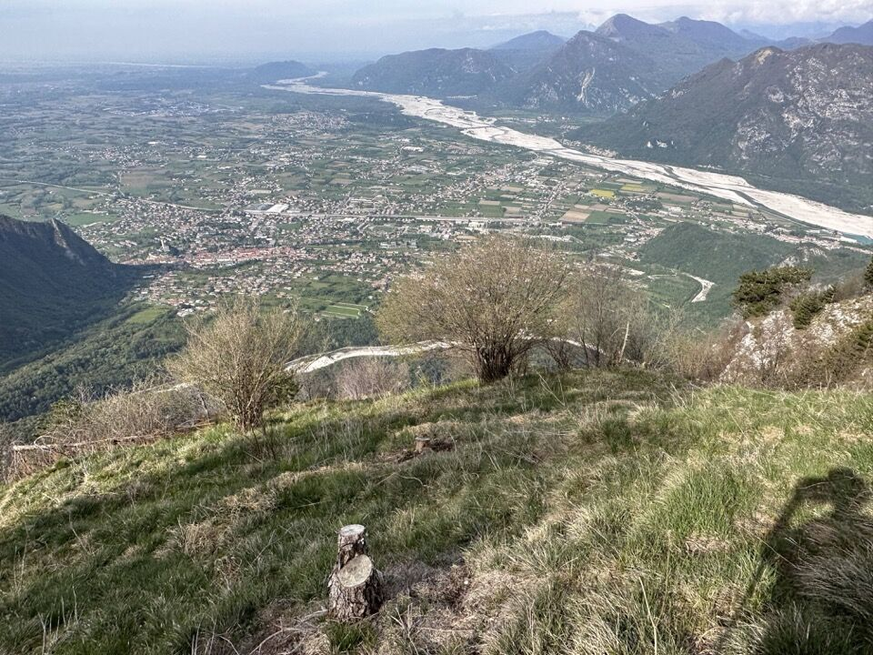

Osservata mille volte passando per Gemona, mi incuriosiva da tempo percorrere la salita al Nâs Piciul dai ripidi pratoni a Sud, relazionata da A. Centeleghe e B. Baracchini in un numero del Cuardin. Essa rappresenta anche una utile via di fuga per chi percorre la cresta Ovest del Deneal, dato che basta 1h30 per scendere dalla cresta giù in paese, senza particolari difficoltà (ma va conosciuto in anticipo!).
Il sentiero che porta ai prati è un vecchio troi utilizzato per la fienagione, difatti la zona è ricca di toponimi.
Il versante un tempo era quasi completamente prativo: ora lo è solo nella parte alta, mentre nella parte bassa esso è boscoso, per via del rimboschimento a pino nero attuato negli anni '30-'50 volto a migliorare la stabilità idro-geologica dei pendii. Ad ogni modo il percorso, simile al mitico troi dal cjamoç, si snoda quasi obbligato fra ripide pale boscose inframmezzate da canali e coste rocciose. La traccia è quasi sempre buona, oltre ad essere piena di tagli alla vegetazione che ho rinnovato.
Il versante Sud dell'Ambruseit come appariva un tempo, tutto prativo. La foto è ricavata da una cartolina che ho comprato usata.
Eccomi al slac, una vasta pietraia ben visibile da Gemona.
Si trova pure un cordino metallico, abbastanza recente; con un bel traverso panoramico si aggira sulla sx la parete.
 La traccia si snoda poi verso Est, arrivando infine alla parte bassa dei prati. Da lì in poi nessuna traccia; c'è qualche grosso tronco tagliato che può essere utile per ritrovare il sentiero in discesa.
Il costone di salita delimita in dx orografica il rio Fontanat, il quale origina dal tratto di cresta fra i due Nâs: c'è un saltone spaventoso, non ho osato sporgermi di più.
Ad un certo punto decido di abbandonare il costone e di salire per il canale erboso, che sbuca in cresta a pochi metri dalla cima.
Sopra la bellissima placconata che dà su Venzone. Mi sarebbe piaciuto scendere per la cresta boscosa che si vede in foto, ovvero per il Cuel Fradeit e la Crete Stuarte (creste di Scriç), ma è irraggiungibile senza passare per il Nâs Grânt. Dietro di essa si nota il piccolo monte di Ledis con la sua cresta est (da me percorsa con Lisa) e il Plauris con i pratoni Graunês.
Uno sguardo verso la cresta che continua verso il Nâs Grânt. Ero molto indeciso, ma ho deciso che sarà per una prossima volta, magari percorrendo la cresta integrale.
Torno indietro per lo stesso itinerario: in foto il ripido canale erboso percorso anche in salita.
Un'ultima foto di Gemona vista dai prati di Ambruseit, davvero bello.
Tornato prima del previsto, ho deciso di fare una passeggiata a sella Sant'Agnese: davvero magnifico!
La cima aguzza è quasi il Nâs Piciul.